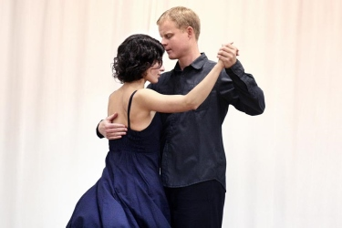

No milonga on October 19
We have an outage this Saturday, the next time we meet will be October 26.
Milonga with a show on October 12
We haven't had a show for quite some time now, so when Jan Chrostek told me he and his partner were ready for us, I was very happy to put them on the program at the soonest opportunity, which is this Saturday.
We're starting at 8.30PM this time and the show will take place sometime around 10.30PM. The playlist will move in the reverse direction: from the modern to the classical. I thought it would be interesting to warm-up to something contemporary, though it's definitely an idea that will need to be tested and only repeated if successful.

As is customary we'll dance until 2AM or until there are no more dancing feet on the dancefloor.
Update: Jan shared a video of them dancing Fresedo's Buscandote - lovely!
Milonga on October 5
It's been raining men the last time, so let's see if we reach an equilibrium this time!
I have yet to announce a DJ, though it's definitely going to be either me or Vláďa. One of us is going to be there, anyhow, and play some damn fine music for dancing.
Milongas in September
The following is our confirmed schedule for September:
- Sep 7 - DJ Vláďa
- Sep 14 - DJ Vláďa
- Sep 21 - canceled; the venue is not going to be available.
- Sep 28 - DJ Tom
No special guests or performances planned - we'll just dance, dance, dance.
The last milonga of this summer
August 31 unfortunately marks the end of this summer, at least for the kids, however we will dance happily knowing that tango is good for you in all four seasons.
I will select the music again and continue mixing Golden Age classics with tangos from the newer era up until the present era.
Milonga on August 24
Electrolonga... not exactly, but we will dance to more electronic sounds than the last time. I am testing the waters here with things that wouldn't fly on a regular night. But this is not a regular night as there's another milonga with a more traditional bent over at Gröbovka. As the dancers come from over there after 11pm, we'll ease back into acoustic tangos.
Milonga on August 17
We are on this Saturday with me spinning the decks. I'll continue exploring the 1950s while stepping back and forth in time as necessary to keep a good flow. Chances of electro: slim, however modern acoustic ensembles will be heard.
Milonga on August 10
DJ Vláďa continues this Saturday with another great playlist from the Golden Age, peppered with the occasional foray into newer music.
The weather report indicates it should not rain tomorrow evening, plus it won't be as hot as it was last time. See you there!
Milonga on August 3
DJ Vláďa returns to stage with a great traditional playlist. When asked to describe he told me it's "the best of Golden Age with the occasional outreach to the 1950s and less occasional outreach to the more recent years". Not to be missed!
As special guests we will have Amanda & Elise dance for us, the awaited Duo Feminino. As we've had a slight deficit of men in the last few milongas I have a gut feeling that this performance will restore parity, if not bring more men than women for a change.